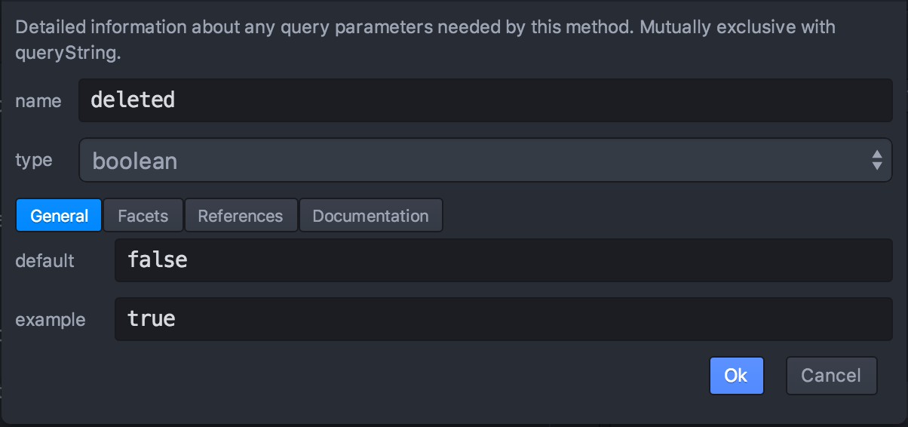
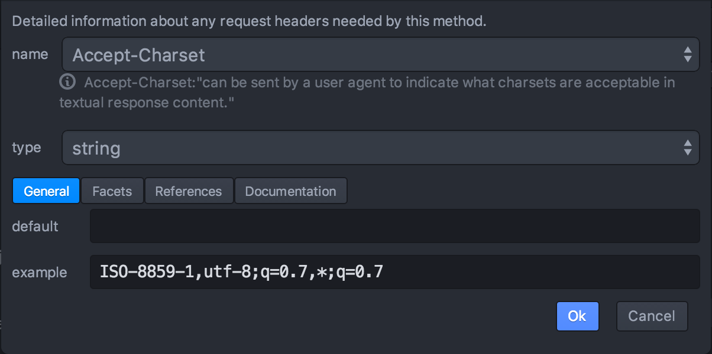
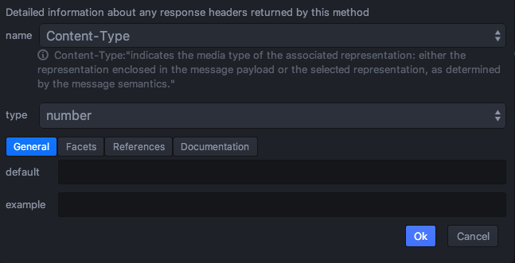

- Getting Started
- Code Completion
- General API Workbench Functionality
- Navigation
- Outline and Details
- Validation
- Wizards
Wizards
Wizards help users to create new elements by displaying user-friendly dialogs.
The wizards are generally available in context menu in the “New…” section and Palette tab of Details pane in the “New…” category.
All wizards are context-depended, that means they are only displayed in context menu or Palette when it suitable to create such an element with regard to the current cursor position.
Following wizards are available:
Create new API

Create new API action initializes RAML file.
This action is only available from context menu.
Action context: this action is available when current file is empty.
It sets up RAML header comment, RAML version is regulated by Generate 1.0 model checkbox.
API Title, Version and Base URI set up the respective API properties.
Selecting Create sample resource will generate a Hello World sample resource template.
Add new resource

This action create new resource.
Action context: this action is available in API context and other resource context. In API context top-level resource is created. In resource context sub-resource is created in the currently selected resource.
New resource URI and Type set up the respective resource properties. It is recommended to start resource URI with slash.
Selecting method checkboxes will make empty methods to be generated.
Add new method

This action creates a new method.
Action context: this action is available in resource context.
Method combo allows selecting HTTP method type.
Generate default body with media type and Generate default body with type combos allow selecting method body media type and type, leaving them empty will generate no body for the method.
Status code, Generate default response with media type and Generate default response body with type set up respective method response properties. Leaving these options empty generate no response.
Create new URI parameter

This action creates new URI parameter.
Action context: this action is available in the context of resource and method.
name and type set up respective parameter properties.
General, Facets, References and Documentation tabs allow setting parameter node properties, see Outline documentation for details.
Create new query parameter

This action creates new query parameter.
Action context: this action is available in the context of method.
name and type set up respective parameter properties.
General, Facets, References and Documentation tabs allow setting parameter node properties, see Outline documentation for details.
Create new header

This action creates new header.
Action context: this action is available in the context of method.
name and type set up respective header properties. Name combo allows selecting from a list of predefined header names.
General, Facets, References and Documentation tabs allow setting header node properties, see Outline documentation for details.
Create new response header

This action creates new response header.
Action context: this action is available in the context of method response.
name and type set up respective header properties. Name combo allows selecting from a list of predefined header names.
General, Facets, References and Documentation tabs allow setting header node properties, see Outline documentation for details.
Create new body

This action creates new method body.
Action context: this action is available in the context of method.
name sets up body media type, type set up body RAML type.
General, Facets, References and Documentation tabs allow setting node properties, see Outline documentation for details.
Create new response

This action creates new method response.
Action context: this action is available in the context of method.
Code sets up HTTP response code.
General, Facets, References and Documentation tabs allow setting node properties, see Outline documentation for details.
Create new response body

This action creates new method response body.
Action context: this action is available in the context of method response.
name sets up body media type, type set up body RAML type.
General, Facets, References and Documentation tabs allow setting node properties, see Outline documentation for details.
Create new property

This action creates new type property.
Action context: this action is available in the context of type declaration.
name and type set up respective property attributes.
General, Facets, References and Documentation tabs allow setting node properties, see Outline documentation for details.
Complete body

This complex action adds new body with schema and example.
Action context: this action is available in the context of method body. The body node must be empty on activation.
type name for payload sets up a name, which will be used for newly added schema namespace and file name.
Create XML body checkbox sets up whether XML sample and schema will be added to the code.
Create JSON body checkbox sets up whether JSON sample and schema will be added to the code.
JSON Example tab allows entering JSON example. The example will be added to the body as a separate file and referenced from the method body.
Generate JSON schema fills up JSON Schema tab with a schema content automatically generated from JSON example.
JSON Schema tab allows entering JSON schema, which will be added to the code as a separate file, included into the current file as a schema node, and referenced from the method body.
XML Example tab allows entering XML example. The example will be added to the body as a separate file and referenced from the method body.
XML Schema tab allows entering XML schema, which will be added to the code as a separate file, included into the current file as a schema node, and referenced from the method body.